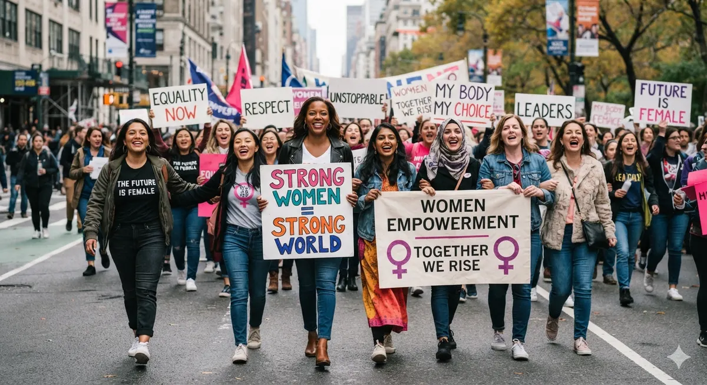
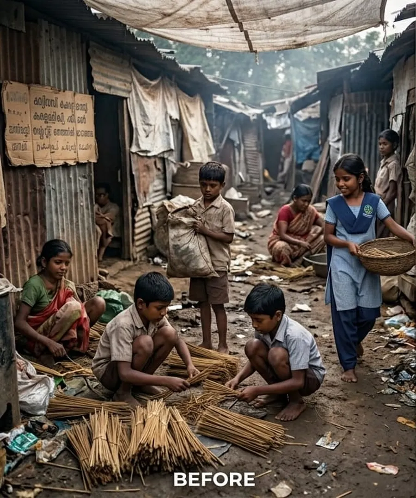

Impact we would measure, and how we would show it.
Every number on this page is demo data. Real reports would replace it.

Activities, outputs, outcomes
Activities are what we do (a reading circle). Outputs are what that produces (sessions held, people attending). Outcomes are lasting changes (a child reads independently; a woman earns steadily). We report all three and never mix them up.
Programme progress Demo data
From need to opportunity Concept visualisation
Drag the handle to compare. This AI-generated illustration shows the kind of change we aim to support.


Sample impact report
Quarter 1 summary Template
Activities: [to be completed]. Outputs: [to be completed]. Outcomes: [to be completed]. Verified reports and updates would be published here.